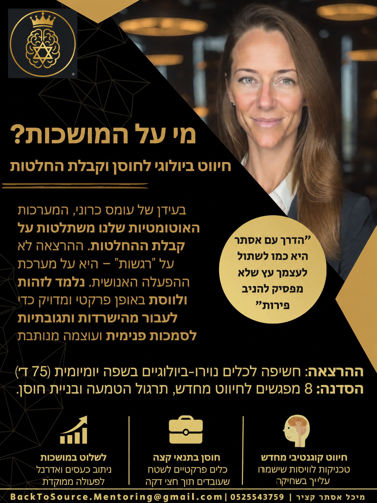

The talk
Decision-making under pressure, in real time
We all make decisions under pressure. The question is not only what to decide, but from which internal state we approach the decision. Esther Michal Katzir's talk offers a practical look at the link between load, automatic reactions, the body, attention and the quality of leadership. It combines knowledge, stories, practice and an invitation to pause a moment before the automatic response chooses for us.
The central idea
In a significant meeting, a complex conversation or a moment of change, there is rarely time to disappear for a few hours and think. That is exactly when it pays to recognise what is happening, organise your attention and choose the next step more precisely.
The illustration shows two ways of responding to the same moment. It does not depict a physiological process.
The talk offers no magic formula. It invites participants to understand what can happen as load rises, and how to bring more presence, a shared language and short tools into the working day.
A key distinction
Regulation matters. It is what allows you to deliver a message, lead a move and make a decision clearly and with focus.
But not every activation needs calming. Sometimes the right move is not to lower the intensity but to aim it - to take the anger, hold it, and channel it forward into the project. Knowing when to regulate and when to channel is part of the work.
What participants take away
What stays with you
Not more inspiration left in the room. Participants leave with a simple language and short tools they can return to in the next meeting, a challenging conversation or a moment of uncertainty.
Who the talk is for
On the contrary - finish the task with energy to spare.
The talk is for management and key roles required to perform under high pressure, who want to bring the project across the line without burning through themselves on the way. It is shaped around your audience, your organisational context and the time available.
What participants said
"Fascinating and packed with information. I loved the direct connection with the audience."
"Grounded in reality, drawing on many sources - and the speaker is simply wonderful."
"She delivers the material lightly and gives practical exercises you can use."
"Empowering, with practical tools for coping in different high-pressure situations."
Fit questionnaire
Five questions, about a minute. At the end you get a clear picture of what could help you and your team right now.
Download

A summary of the talk, the format and contact details - easy to forward to whoever decides. The flyer is in Hebrew.
Next step
Tell us briefly about the audience and the challenge on your mind, and we will think together about whether the talk is the right opening.